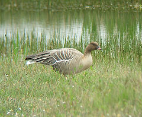
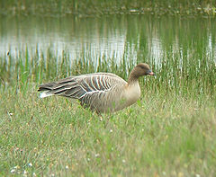

| Pink-footed Goose | |
|---|---|
|  | |
| Conservation status | |
| Binomial name | |
| Anser brachyrhynchus Baillon, 1834 |
| Pink-footed Goose | |
|---|---|
|  | |
| Conservation status | |
| Binomial name | |
| Anser brachyrhynchus Baillon, 1834 |
The Pink-footed Goose (Anser brachyrhynchus) is a goose which breeds in eastern Greenland, Iceland and Svalbard. It is migratory, wintering in northwest Europe, especially Great Britain, the Netherlands, and western Denmark. The name is often abbreviated in colloquial usage to Pinkfoot (plural Pinkfeet).
It is a medium-sized goose, 60–75 cm long, the wingspan 135–170 cm, and weighing 1.8–3.3 kg. It has a short bill, bright pink in the middle with a black base and tip, and pink feet. The body is mid grey-brown, the head and neck a richer, darker brown, the rump and vent white, and the tail grey with a broad white tip. The upper wing-coverts are of a somewhat similar pale bluish-grey as in the Greylag Goose, and the flight feathers blackish-grey. The species is most closely related to the Bean Goose Anser fabalis (having even been treated as a subspecies of it at times in the past), sharing a similar black-and-coloured pattern bill, but differing in having pink on the bill and legs where the Bean Goose is orange, and in the paler, greyer plumage tones. It is similar in size to the small rossicus subspecies of Bean Goose, but distinctly smaller than the nominate subspecies fabalis. It produces a medley of high-pitched honking calls, being particularly vocal in flight, with large skeins being almost deafening.[1]

{kind=link}